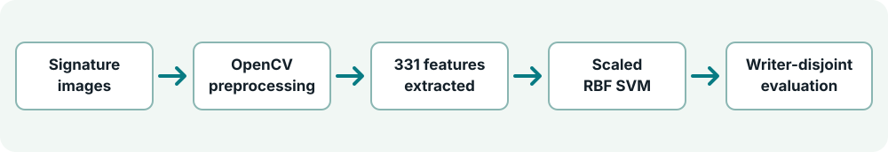

Pillar 1 · AI & Machine Learning Systems
Signature Verification AI
A classical computer vision pipeline engineered to distinguish authentic signatures from skilled forgeries through geometric, statistical, and contour feature extraction.
Pipeline Architecture
The verification pipeline executes a multi-stage image processing sequence engineered to standardize scan variations and isolate ink strokes:

- 1. OpenCV PreprocessingConverts images to grayscale, applies Gaussian blur and Otsu thresholding, then finds contours to crop the signature area.
- 2. Geometric NormalizationCalculates the signature bounding envelope and resizes the binary mask to standardized dimensions while preserving stroke aspect ratios.
- 3. Feature Extraction (331-D)Combines aspect ratio, normalized bounding-box area and global ink density (3), a 16×16 local density grid (256), horizontal and vertical projections (64), contour count (1), and Hu moments (7).
- 4. SVM ClassificationProjects extracted feature vectors into an RBF-kernel Support Vector Machine (SVM) trained under a writer-disjoint split protocol to detect genuine vs forged specimens.
- 5. FastAPI & Demo InterfaceExposes inference through FastAPI and a React interface for image upload, preview, and preprocessing visualization. The API returns a class label without a calibrated confidence probability.
Evaluation & Empirical Results
To prevent data leakage, the feature extraction and classification pipeline was evaluated under a strict writer-disjoint validation protocol on the benchmark CEDAR signature dataset, ensuring the test split contains signatures from authors never seen during model training.
| Evaluation Metric | Reported Prototype Baseline | Benchmark & Protocol Details |
|---|---|---|
| Overall Accuracy | 65.91% | CEDAR dataset writer-disjoint split (RBF-SVM, C=1.0, gamma=scale) |
| Precision (Genuine) | 72.11% | Share of predicted-genuine samples that were authentic signatures (TP / (TP + FP)) |
| Recall (Sensitivity) | 51.89% | Share of authentic genuine signatures correctly accepted under writer-disjoint testing (TP / (TP + FN)) |
| F1-Score (Harmonic Mean) | 60.35% | Harmonic mean balancing genuine precision and recall across 331 handcrafted features |